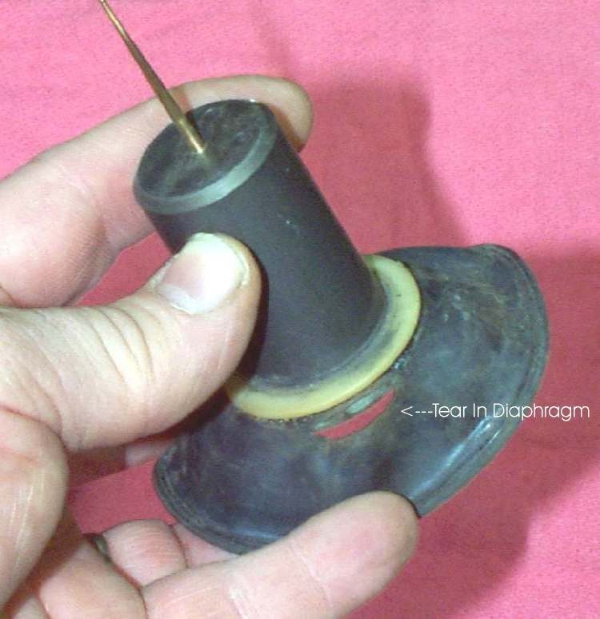
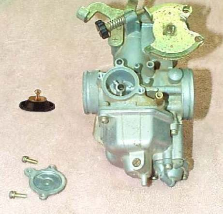
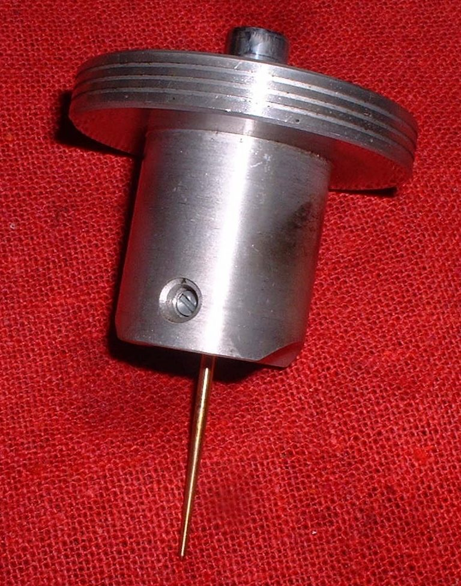

The engine has good compression, starts easily and idles, but when the throttle opens it climbs very slowly and has little power. On a constant velocity (CV) carburettor the slide is lifted by engine vacuum acting on a rubber diaphragm. A hole in the diaphragm lets air leak in, the slide lifts late or not far, and the engine is starved of fuel.
Is it safe to ride?
Ride with care. Power may fail when you need it to pull out of a junction.
Quick checks first
- Check the air filter is clean.
- Open the throttle with the engine off and see that the cable moves freely and the throttle returns fully.
- Check the intake rubber for cracks.
- Check the fuel flow. See Check the fuel tap, lines and flow.
Diagnose it step by step
1Does the carburettor have a vacuum slide (a round cover on top, with a rubber diaphragm inside)?
- Yes: go to step 2.
- No: this fault does not apply. See Engine has low power.
2Does the engine have good compression and a healthy spark?
- Yes: go to step 3.
- No: see Test engine compression.
3With the top cover and slide out, is there a hole, tear or hard crack in the diaphragm?
- Yes: replace the diaphragm or slide assembly. See Check the slide diaphragm of a constant velocity carburettor.
- No: go to step 4.
4Does the slide stick or drag in its bore?
- Yes: clean the slide with a rag dampened with cleaner. Keep it off the rubber. See Clean the carburettor.
- No: look for blocked jets or an air leak. See Find an intake air leak.
Do not clean the outside of a CV carburettor with spray cleaner unless you are sure the slide is not a rubber diaphragm type. The cleaner can harm the rubber. Some CV carburettors use an all steel piston instead of a diaphragm. These are still better not sprayed because the float bowl gaskets are rubber.
Causes, most likely first
| Cause | How to confirm | Fix |
|---|---|---|
| Torn or cracked diaphragm | Seen when the cover is off | New diaphragm or slide |
| Slide sticking | Does not drop freely | Clean slide and bore |
| Slide fitted wrongly after service | Jammed or lifts oddly | Refit the right way round |
| Blocked jets | Hesitation after standing | Clear carburettor jets and passages |
| Air leak at the intake rubber | Idle rises when fuel is sprayed there | Replace the rubber or reseat it |